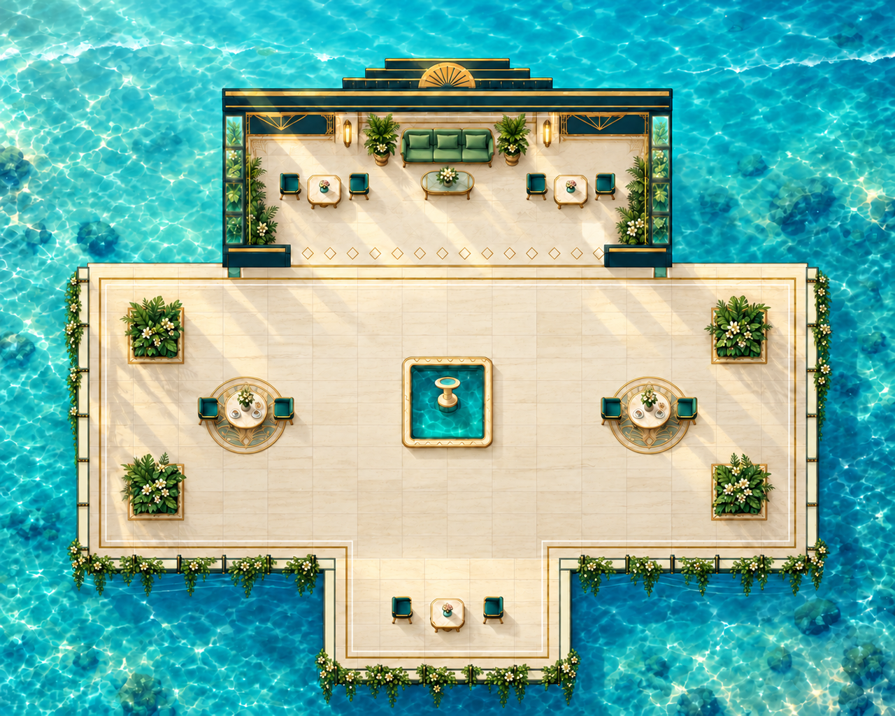
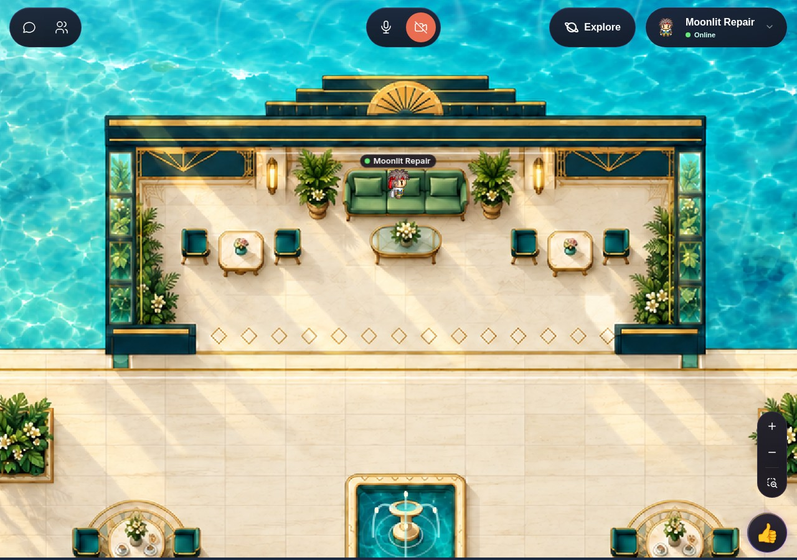
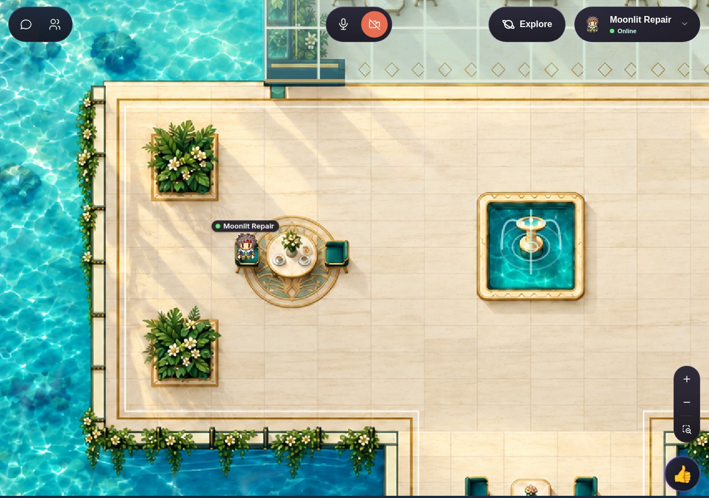
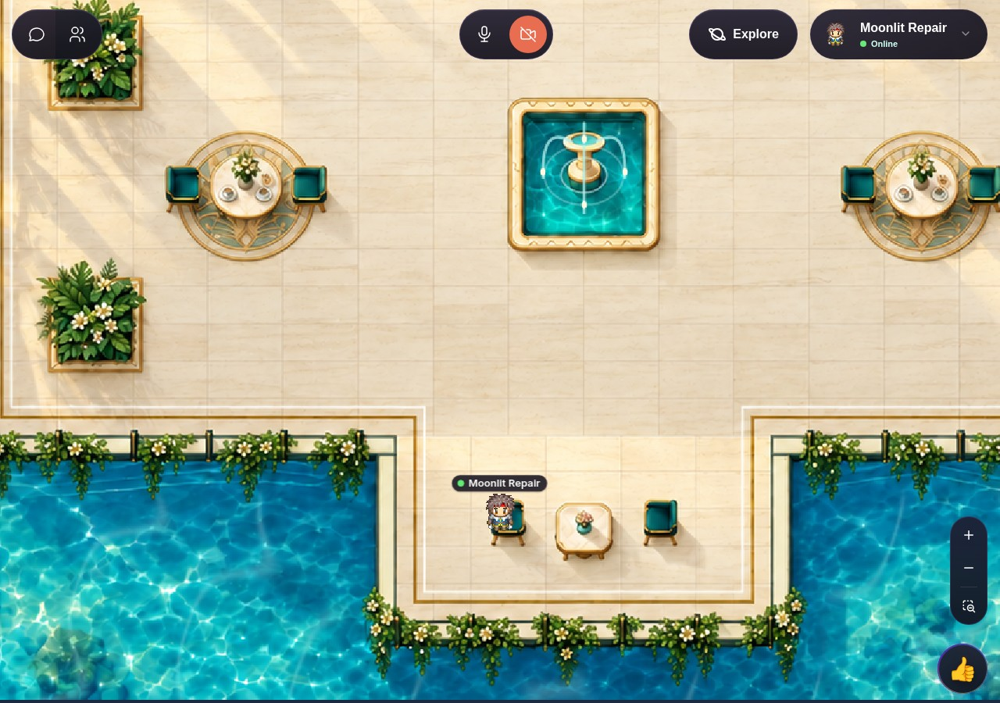
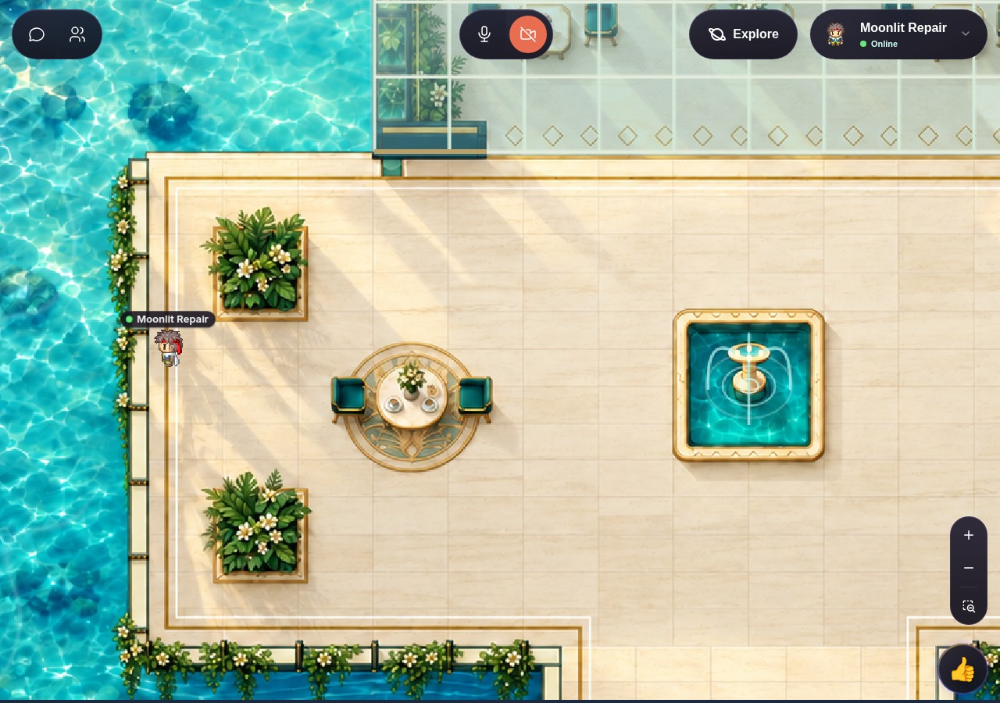
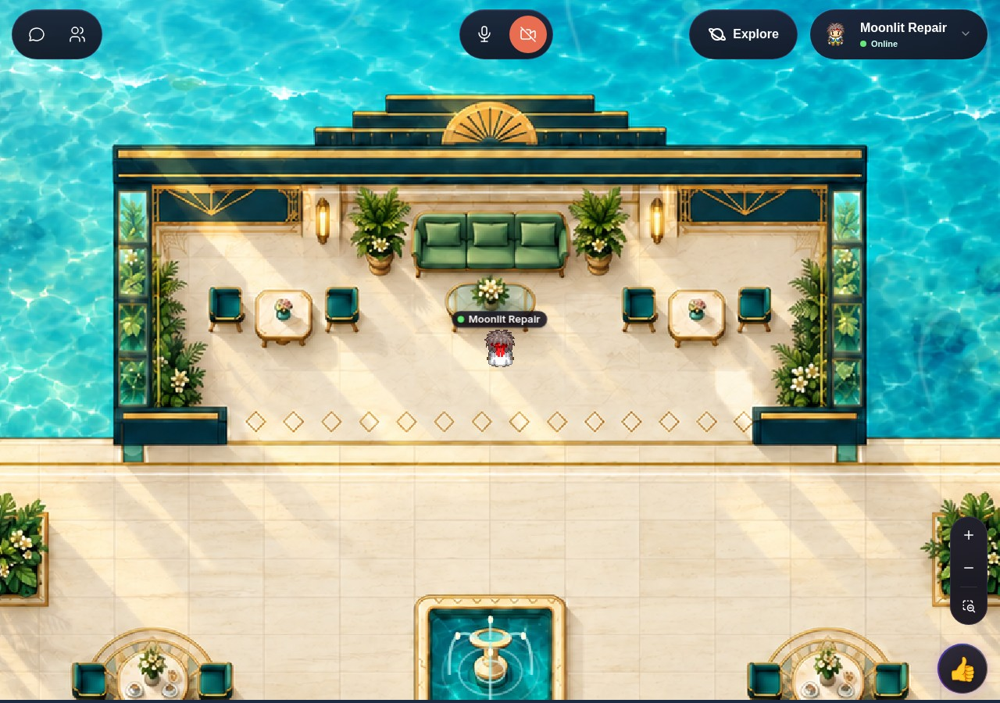
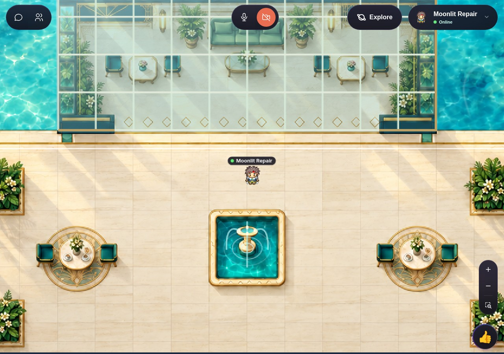
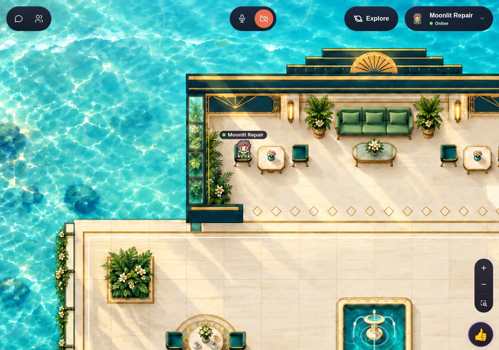
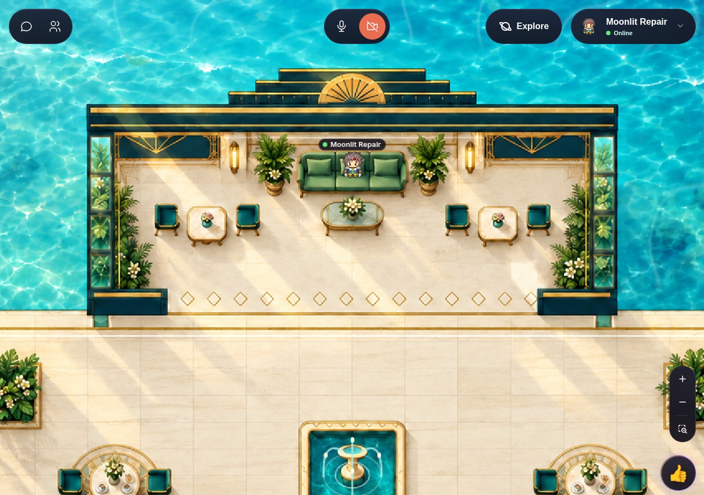
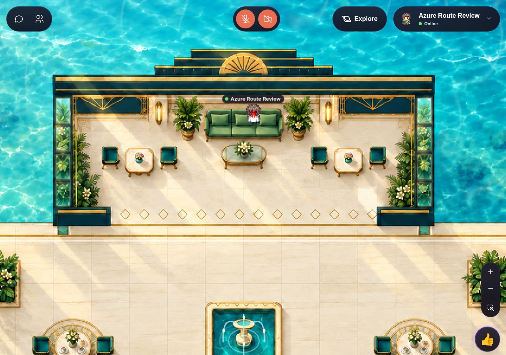

Published preview. Runtime assets match tested commit0992485c4b48d0846aaf4ab00e17f8d2d3d92dc7. No changes to Moonlit or other maps. TMJ · Exact interactions · Independent review

Stationary multi-loop observation, then keyboard travel into and out of the glass lounge. Ocean caustic highlights and fountain droplets/ripples are animated; the underlying artwork stays fixed. The software-rendered capture is not a60fps/perfection claim.
Independent12.34-second stationary capture covers more than three ocean cycles. Reviewer inspected ordered rendered frames rather than direct continuous playback.Captured Phaser master output through real menu Play/Stop actions: initial silence, playing crossings, then Stop and continued silent movement. No test-injected play or context resume. Physical speakers were not verified. Measurements · Why native audio Stop was not used









All13 updated seat targets independently retested. The narrow rear wall is solid; no full-width path was removed. Ordinary keyboard movement exits every seat.
404 passing route traversals:101 continuous runs, two movement methods, both directions. All13 seat targets and24 table-side checks passed independent review. The rear wall is solid, and seat actions finish at painted cushion centers. Woka uses its native upright pose. No private rooms or quests. See the independent report for evidence boundaries.